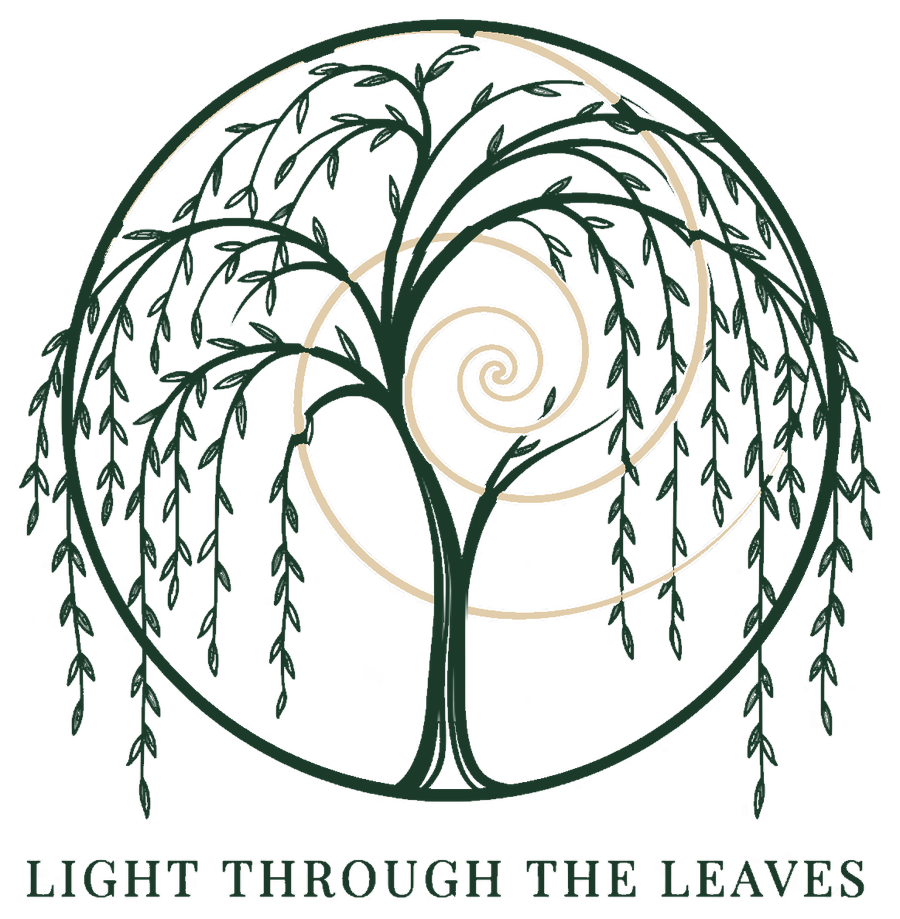
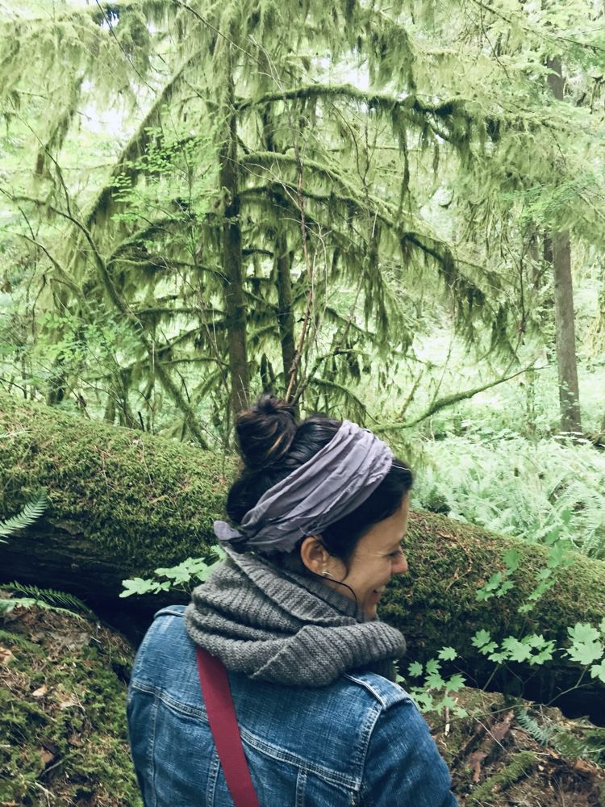
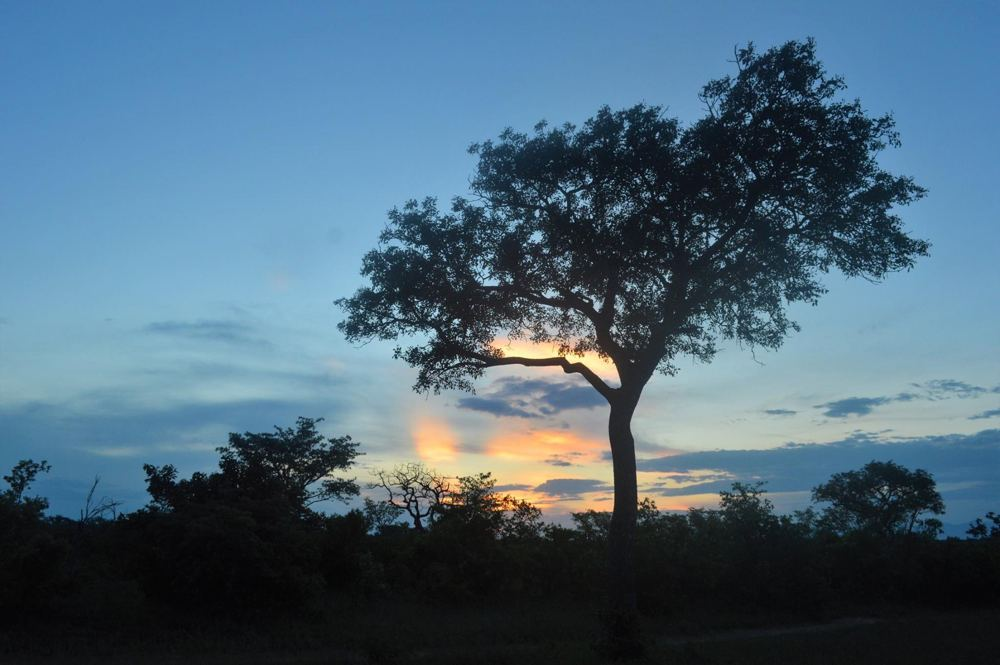
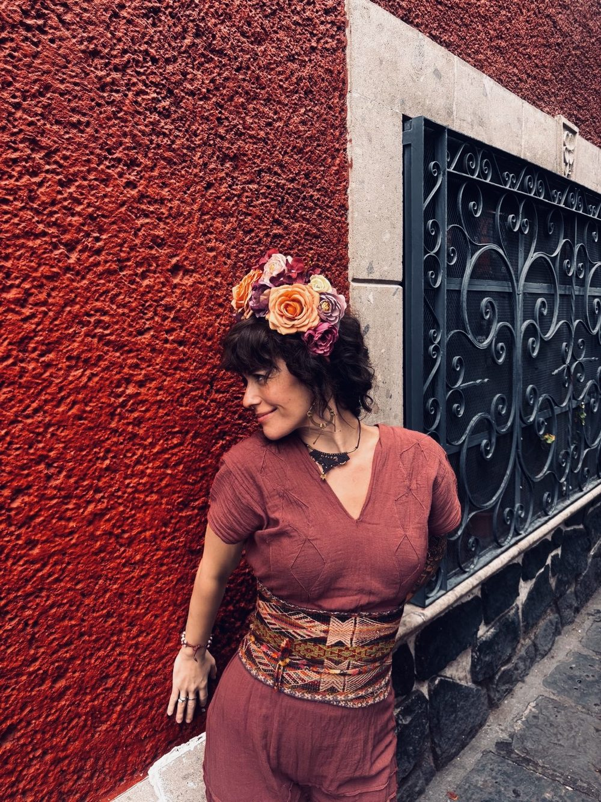

Light Through the Leaves
Rooted in Ancestral Wisdom, Grounded in the Body
A space for reconnection, remembrance, and intentional transformation.

A Path of Reconnection
Light Through the Leaves is rooted in the understanding that we are part of a living whole. Our relationship with ourselves is inseparable from our relationship with the Earth, our lived experiences, and the ancestral histories that shape us.
Through ancestral medicine ceremonies and somatic support, I offer space to slow down, listen, and deepen this relationship. My approach honors the wisdom of the natural world, the traditions carried across generations, and each person’s unique path toward greater awareness and connection.
Ancestral Wisdom & the Body’s Own Knowing
Ancestral medicines can offer opportunities for reflection, connection, and new perspectives. I approach this work with respect for its cultural roots, humility toward the knowledge entrusted to me, and discernment about what may be appropriate for each person.
I also recognize that reconnection can take many forms. Our bodies carry the imprint of our experiences, expressed through sensations, patterns, and responses that are not always accessible through words alone. Somatic work offers another way to listen to the body’s wisdom and support greater awareness and nervous system regulation.
For some, somatic support may complement ancestral work. For others, it may be a more suitable alternative. Neither path is right for everyone; the intention is to approach each person and their needs with care.

A Practice Guided by Respect
My approach is shaped by years of experience in public health, learning alongside Indigenous communities, and an ongoing relationship with the natural world and ancestral practices.
I believe this work calls for humility, responsibility, and a willingness to remain a student. Traditions deserve to be understood within their cultural contexts, and meaningful change cannot be promised or prescribed. My role is not to tell you who to become, but to offer thoughtful support as you explore your own relationship with yourself and the world around you.

Meet Estefani
My path to this work has taken me across cultures and communities, through personal transformation, and into a deeper understanding of the connections between body, spirit, and Earth. The experiences and teachers who have shaped me continue to inform how I approach this work—with curiosity, respect, and a commitment to continued learning.
I bring these experiences into Light Through the Leaves while recognizing that my own journey is ongoing.
An Invitation
You don’t need to have everything figured out before you begin. Whether you feel drawn to ancestral medicine or are exploring a body-centered approach, the first step can simply be a conversation.
Together, we can explore your intentions, discuss the available offerings, and consider what kind of support may be appropriate for you.
You are part of the living world that holds you. There is room here to remember that connection.
With care,
Estefani
Founder of Light Through the Leaves